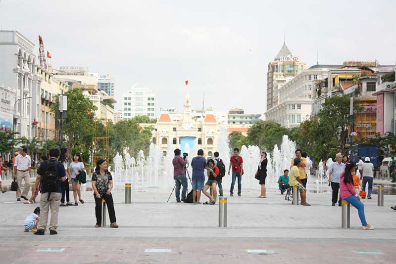
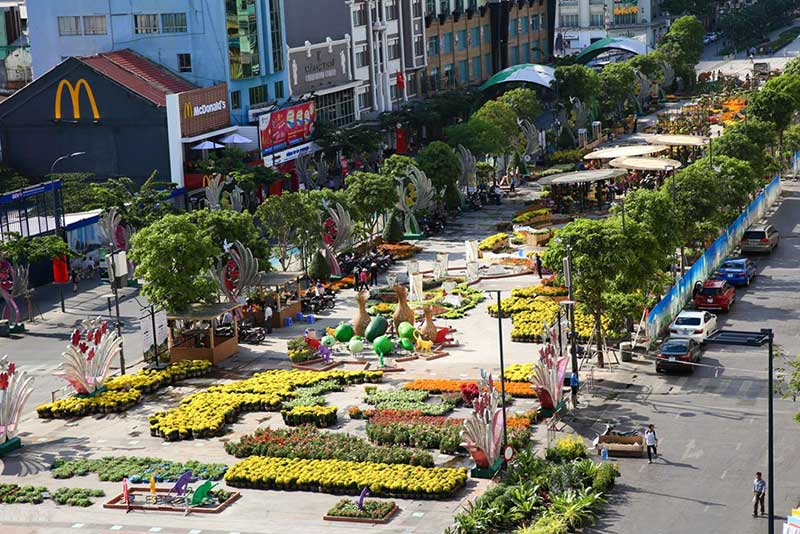
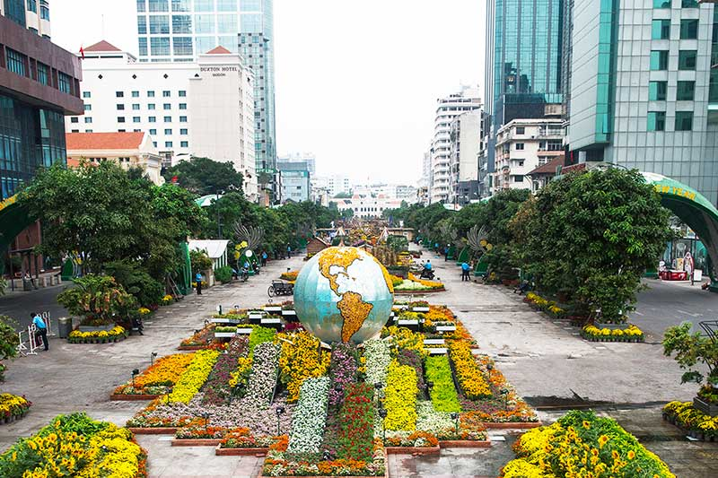
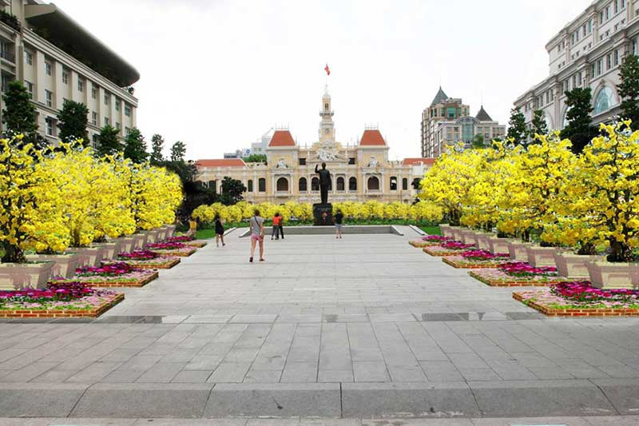
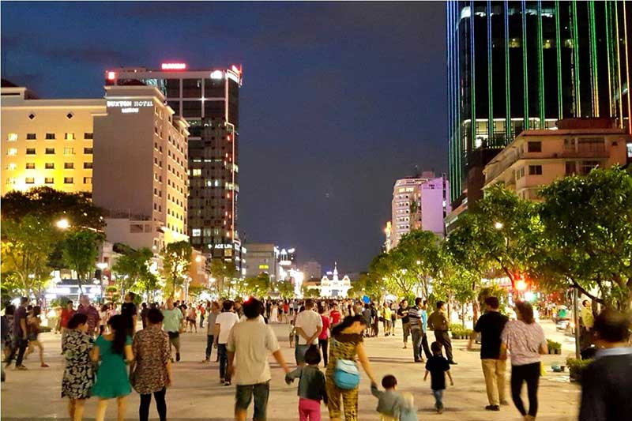
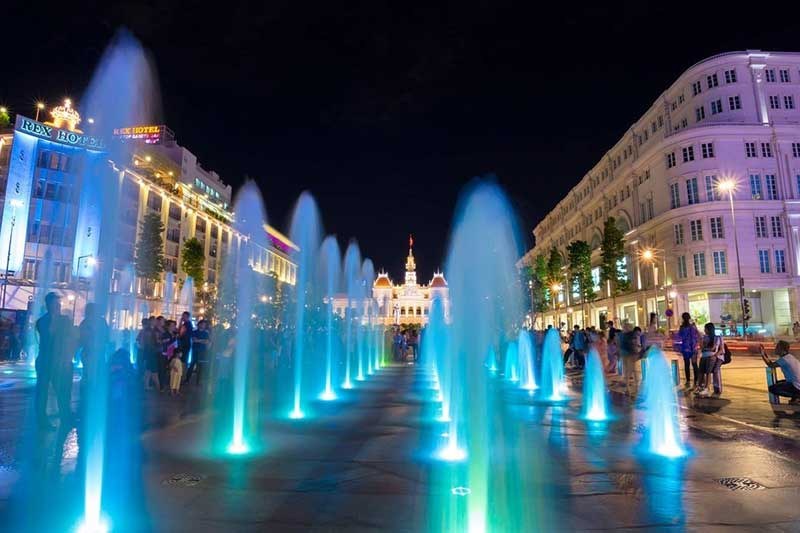

Địa chỉ: Đường Nguyễn Huệ, Quận 1, Tp.HCM.
Phố đi bộ Nguyễn Huệ có chiều dài 670m, rộng 64m, với tổng kinh phí xây dựng gần 430 tỷ đồng gồm 2 phân đoạn: Công viên tượng đài Chủ tịch Hồ Chí Minh từ đường Lê Thánh Tôn (trước trụ sở UBND TP.HCM) đến đường Lê Lợi và quảng trường Nguyễn Huệ từ đường Lê Lợi đến Tôn Đức Thắng.
Đường Nguyễn Huệ từ lâu đã là con đường huyết mạch của trung tâm thành phố. Đặc biệt vào mỗi dịp Tết đến, nơi đây tổ chức triển lãm đường hoa được người dân thành phố rất quan tâm yêu thích, và giờ đây con đường ấy đã trở thành con đường đi bộ với nhiều hạng mục công trình, phục vụ nhu cầu tham quan, vui chơi của người dân không chỉ vào dịp xuân mà còn tất cả các ngày trong năm.
 Quảng trường trước tượng đài Bác Hồ (đường Nguyễn Huệ, người dân quen gọi là phố đi bộ) được UBND TP HCM đưa vào sử dụng vào dịp 30/4/2015 sau 7 tháng thi công. Đây là quảng trường đẹp và hiện đại nhất Việt Nam với chiều dài 640m, rộng 64m, kéo dài từ UBND TP HCM đến bến Bạch Đằng.
Địa điểm này không chỉ thu hút du khách khi ghé thăm thành phố mà còn là nơi tụ tập của giới trẻ mỗi ngày. Thời điểm phố đi bộ Nguyễn Huệ đông đúc nhất có lẽ là khi nắng tắt, thời tiết trở nên mát mẻ dễ chịu.
Phố đi bộ Nguyễn Huệ được đầu tư với nhiều hạng mục như đèn chiếu sáng, đài phun nước tạo cảnh quang, cây xanh... Ở đây mỗi dịp cuối tuần sẽ rất đông đúc với nhiều hoạt động giải trí, các nhóm du ca biểu diễn... không khí rất cởi mở vui tươi.
 